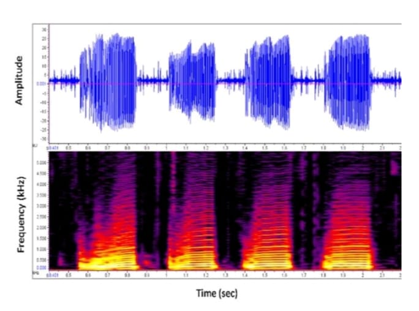
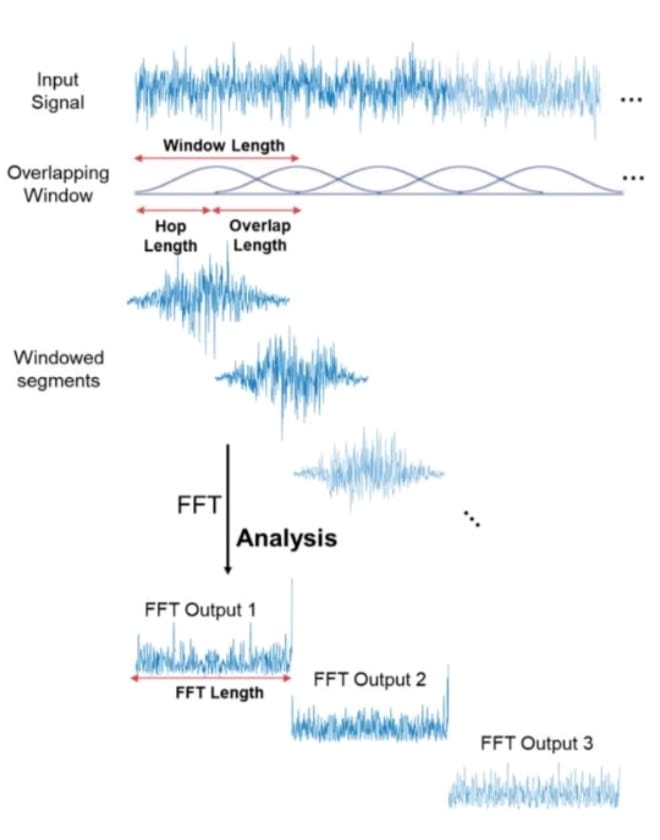
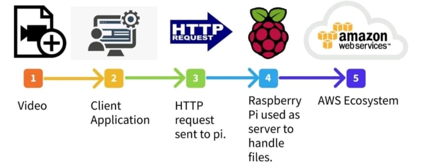

March 1,2023 Speech AI↓
What Speech AI do?
Speech-to-speech translation to other language with preserved voice characteristics found in the source voice throught the translation.
We are excited to introduce SpeechAI to get users’ feedback and learn about its strengths and weaknesses. Try it now at coolspeech.in.
Methods
Methods followed for Speech translation from one language to another are, at first the audio input from the user is taken and then it is converted into .wav format and then processes the audio to a particular frequency range of 22050 Hz. After setting the audio to a particular frequency the multiple channel audio is converted into single channel, then the audio file is divided into smaller chunks and speech present in each chunk is converted into text. Later it is fed to a Tacotron 2 model which is a architecture for text-to-speech synthesis which consists of an encoder and decoder network. It includes a mel spectrogram prediction network, which generates a mel spectrogram which have a ability to generate high quality speech that is difficult to distinguish from human speech. Finally the translated audio will be stored in S3 bucket which allows the user to store and retrieve any amount of data.

Using Mel-spectrogram for feature extraction
A Mel-spectrogram is a visual representation of the spectral content of a signal as a function of time and frequency, with frequency on the y-axis and time on the x-axis as shown in figure .It is computed by applying a Short-Time Fourier Transform (STFT) to a signal, and then mapping the resulting spectral power to the mel scale, which is a nonlinear scale that more closely approximates the human perception of pitch. Mel-spectrograms are commonly used for feature extraction in the field of speech and music processing. They can be used to extract features for tasks such as speech recognition, music classification, and speaker identification.
To compute a mel spectrogram the following steps are followed and also represented in below figure.
1. Pre-process the signal: This may include applying some filtering or denoising
techniques to the signal to remove unwanted noise or reduce the bandwidth of the
signal.
2. Compute the STFT of the signal: This involves dividing the signal into overlapping
frames and applying the Fast Fourier Transform (FFT) to each frame to obtain the
spectral content of the signal at that time.
3. Map the spectral power to the mel scale: This involves applying a mel-frequency
warping function to the power spectrum obtained from the STFT to obtain a
frequency scale that more closely approximates the human perception of pitch.
4.Compute the log power spectrogram: The mel spectrogram is typically computed as
the log power of the mel-scaled spectral content. This is done by taking the logarithm
of the spectral power in each mel-scaled frequency bin.
5. Display the mel spectrogram: The resulting mel spectrogram can be visualized as a
2D image, with time on the x-axis and frequency on the y-axis. The intensity of each
pixel in the image represents the log power of the signal at that time and frequency.

System Design

Applications
- E-Learning
- Language Translator
- Chat bots
- Voice Assistants
- Movie Dubbing